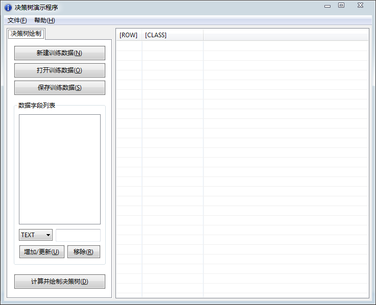
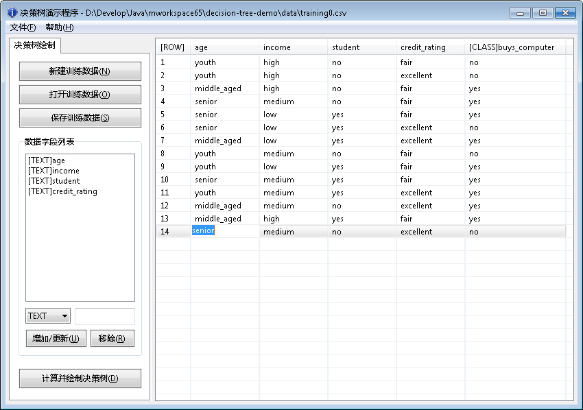
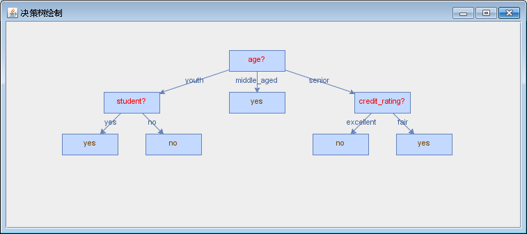
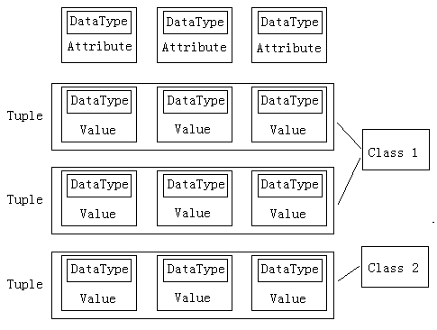
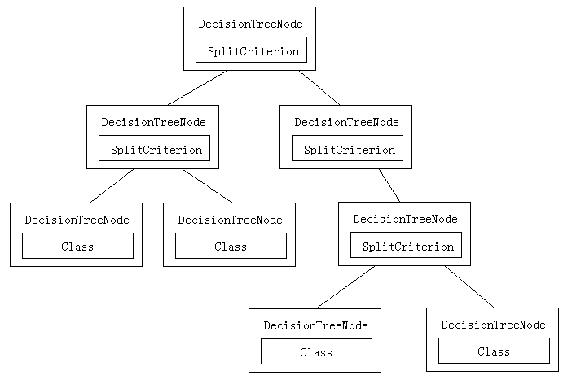

本项目主要应用于教学场景，目的在于帮助数据挖掘初学者快速理解决策树。使用者通过自定义各种训练数据生成不同的可视化决策树，能够更直观深入理解决策树的计算过程和结果。决策树生成算法采用了ID3，算法流程来自《数据挖掘：概念与技术（第2版）》一书，作者韩家炜，由机械工业出版社出版。
在此特别感谢SWT和JGraphX项目。欢迎有志之士共同参与开发，继续完善本项目。
This project is mainly for teaching goal and helps fresh data mining learner understand the Decision Tree better. With data customizing and visual graph features, learners can experiment with their training data and have a quick start with basic decision tree. ID3 is choosen to be the decisiontree generaing algorithm. The algorithm is from the book Data Mining, Concepts and Techniques, Second Edition, which is written by Jiawei Han and published by China Machine PRESS.
Thanks for the SWT and JGraphX project. All contribution to this project is warmly welcome.
| /data | 预置的训练数据 |
| /docs | 使用手册及API |
| /lib | 引用外部库 |
| /src | 源代码 |
| .project | Eclipse工程文件 |
| build.xml | ANT编译脚本 |
| LICENSE | 开源协议 |
| README | 自述文件 |
Prompter> ant使用下面命令可以编译并运行二进制可执行文件：
Prompter> ant launch
用户可以选择其中一个运行。如果运行DecisionTree，将读取默认的训练数据文件，并把生成的决策树打印到控制台。如果运行DecisionTreeApp，将启动一个GUI演示程序，供用户编辑训练数据并打印可视化决策树。如果运行TreeGraphDemo，将演示一个打印静态树的例子。
采用上述第2种方法运行，或ANT编译运行，将出现下面的GUI演示程序主窗口，说明运行成功：
训练数据采用纯文本存储，后缀名为.txt或.csv，文本为UTF-8 without BOM格式。
下面是训练数据training0.csv的截图示例：
用户可以使用喜欢的文本编辑器直接打开训练数据文件，也可以使用GUI演示程序的“打开训练数据文件”功能打开指定的文件。例如training0.csv文件载入后如下图所示：
左边的面板中显示了该训练数据集的数据字段列表；右边的面板显示所有训练数据元组详情。第1列序号为自动生成。最后一列为元组分类。
单击GUI演示程序右方的数据表中任一单元格即可编辑其中数据。如要新增一行数据，单击面板中的任意空白处即可。
注意：必须保证每一行数据的各个字段都已填写合适的值，否则程序认为无效，会要求重新输入。
本GUI演示程序支持动态添加或移除数据字段，即数据表中的某一列。程序在计算决策树时，会依次判断哪一列的属性为最佳分裂属性，然后产生新的分支。因此增加或删减数据属性列对生成决策树的结果影响极大，但是并非完全（若新增或删减的列所含信息熵太少则影响不大）。
选中“数据字段列表”中的某一列，可以更改其数据类型。该属性的数据类型决定其在决策树生成算法的计算方式（连续或离散），用户也要保证在数据表中填入对应该列的值符合其数据类型的规范，否则程序会在计算过程中发生错误。
如果要新增数据列，可填写列名，选择数据类型，单击“增加/更新”即可。若已存在相同列名为更新，否则为添加。列添加成功后会为该列的数据单元填充空白值，请尽快更改为符合该列数据类型的值。
如果要删除数据列，从列表中选择一项，选择“移除”即可。
使用GUI演示程序的“保存训练数据”可将当前程序的训练数据存储入文本文件中，以备下次再用。
在项目根目录下的/data目录里，预存了4个训练数据文件示例，用户可使用它们来测试决策树的计算与绘制效果。
准备好训练数据后，单击GUI演示程序左下方的“计算并绘制决策树”，系统会弹出一个新窗口，上面绘制的即是根据训练数据生成的决策树可视化模型：
该决策树为实时绘制结果，如果当场改变GUI演示程序中的训练数据后再次绘制，则立即可得到新的结果。正是这样的特性直观地展示了训练数据和决策树之间的计算关系，使得决策树的学习和理解变得轻松易行。
在决策树生成过程中，不仅有训练数据来构造树，还要有测试数据来检验树。由于本程序主要用于演示目的，因此测试集的判决主要依靠人眼观察进行。方法很简单：根据决策树从根到叶节点的顺序，依次取出待判决数据中的每一个属性比较，即可得到最后的分类结果。
本模块的所有代码位于源代码的com.zluyuer.dt.algo包下，DecisionTree为程序主入口点，能根据训练数据构造决策树模型。附带一个控制台打印决策树输出的工具类TreeHelper。其他细节请查看API文档。
下面的集合类图表示表明几个容器类之间的从属逻辑：
下面的决策树结构图表示树的节点信息：
本GUI演示程序采用SWT库作为界面库，同时采用JGraphX作为图形绘制库，在此基础上封装了一个TreeGraphWindow类，作为决策树算法模型到可视图形适配器。因此，只需要下面几行代码就可以把决策树算法模型绘制在Swing窗口中（JGraphX是基于SWing开发）：
DecisionTreeNode root = DecisionTree.createTree(tupleList, attrList); TreeGraphWindow graphWindow = new TreeGraphWindow(root); graphWindow.display();
另外，在与界面的数据交互中，使用了DataModel类来临时存储用户载入、定制和保存的各项决策树数据。其他细节请查看API文档。
在本模块中主要实现了几个辅助工具类来读写文件、GUI辅助等。细节请查看源代码。